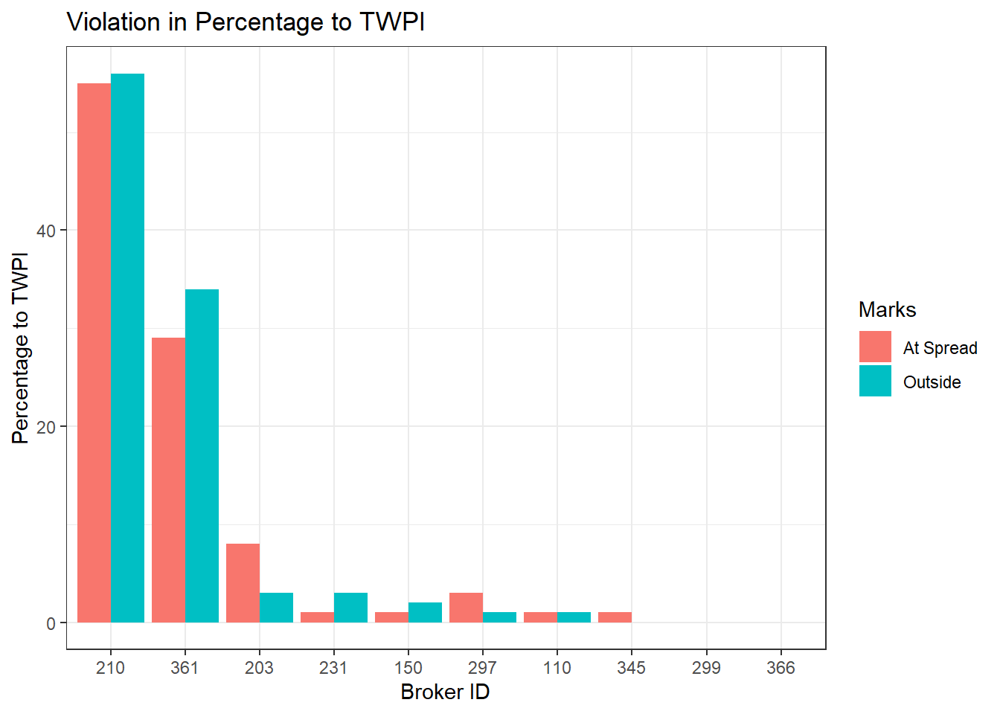

Pattern Analysis
1 Logistic Regression
Balance accuracy of at-the-spread violation on the test set:
[1] 0.6501396Balance accuracy of outside-the-spread violation on the test set:
[1] 0.69096251.1 Apply model to twpi data outside broker 210 and 361
Balance accuracy of at-the-spread violation on other brokers TWPI:
[1] 0.5682106Balance accuracy of outside-the-spread violation on other brokers TWPI:
[1] 0.62229342 Random Forest
2.1 At-The-Spread
Balance accuracy of at-the-spread violation on the test set, and the variable importance:
[1] 0.7395602 0 1 MeanDecreaseAccuracy MeanDecreaseGini
DollarValue 85.49952 110.67693 179.76973 4052.576
AskVol_before 199.06020 282.46339 344.13199 4950.909
BidVol_before 211.12649 232.83828 306.53851 4921.183
Volume 62.72941 82.84629 137.65970 3244.507
Date 21.87881 97.18431 89.46678 2697.987
Hour 22.30198 74.11787 67.73676 1444.550
Year 128.20575 241.87845 272.70691 1705.979
Month 39.33932 91.77657 101.35417 2197.628
Dayofweek 14.45402 72.53773 67.14578 1330.6812.2 Outside the Spread
Balance accuracy of outside-the-spread violation on the test set, and the variable importance:
[1] 0.8208703 0 1 MeanDecreaseAccuracy MeanDecreaseGini
DollarValue 132.16029 182.8934 241.9433 7413.309
AskVol_before 351.30985 362.3177 430.1802 14675.933
BidVol_before 328.47010 407.8564 460.0896 14587.618
Volume 148.02258 214.6927 289.9465 7678.542
Date 88.37710 304.5789 299.1094 8628.460
Hour 63.04745 182.2500 187.8373 3919.365
Year 254.94090 784.3092 795.5113 8415.715
Month 129.23229 521.1349 512.9762 6035.069
Dayofweek 65.85306 282.8153 285.3133 3707.9912.3 Apply model to twpi data outside broker 210 and 361
Balance accuracy of at-the-spread violation on the other brokers TWPI:
[1] 0.6761819Balance accuracy of outside-the-spread violation on the other brokers TWPI:
[1] 0.69045253 Summary
| Violation | GLM_others | RF_others |
|---|---|---|
| at-spread | 0.5682106 | 0.6761819 |
| outside-spread | 0.6222934 | 0.6904525 |